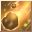

Loading...
Items
Weapons
Sword
Hammer
Axe
Two-Handed Sword
Two-Handed Hammer
Two-Handed Axe
Bow
Firearm
Relic
Staff
Shield
One-Handed Mecha Weapon
Two-Handed Mecha Weapon
Artillery
Arrows
Shells
Crystal
Katana
Armor
Head
Body
Legs
Hands
Feets
Back
Accesory
Backpack
Special Equipment
One-Handed Equipment
Two-Handed Equipment
Headgear
Back
Body
Talents Items
Talent Card
Talent Plane
Talent Fragment
Talent Skill
Power Stone
Sprite
Sprite
Jug Monster
Backpack
Sprite Island Formule
Sprite Island Breeding
Sprite Island Recipes
Sprite Island Buildings
Sprite Customes
Sprite Workbench
Sprite Emblem
Skill Book(Novice)
Skill Book(Intermediate)
Skill Book(Advanced)
Supplies
Mining
Foraging
Hunting
Crafting Ingredients
Piedras de Equipo
Gem Stone
Rune Stone
Resonance Stone
Nucleus
Mounts
Thrones
Comb Talents
Berserker
Paladin
Ranger
Assassin
Cleric
Sage
Wizard
Necromancer
Enginer
Demolitionist
Void Runner
Time Traveler
Quest
Titles
Skills
Berserker
Paladin
Ranger
Assassin
Cleric
Sage
Wizard
Necromancer
Enginer
Demolitionist
Void Runner
Time Traveler
Sprites
Portuguese
English
Spanish
Portuguese
French
Suggestions
Contact Us
Credits
Make Alchemy
F.A.Q
Time
00
:
00
:
00
Emissaries Timer
<Avatar do Emissário>Anunciador da Luxúria
Floresta Antiga (X:290, Y:370) Monday 20:35
<Emissário Lunático> Loucura da Luxúria
Vale dos Cavaleiros (X:510.53, Y:619.852) Monday 20:35
<Emissário Pesadelo> Ladona Voraz
Arena de Combate do território ilusório (X:134.088, Y:347.754) Monday 15:30
Emissário Antigo Justiça
Vale dos Espíritos (X:439.138, Y:559.115) Monday 20:30
<Emissário Ilusionista> Alpha Yen
Aldeia Aura Ilusória (X:639.151, Y:232.943) Monday 15:30
<Emissário Ilusionista> Iota Zhong
Passagem da Chama de Fogo Congelante (X:534.548, Y:578.733) Monday 20:30
Skills Cleric
Skills
Passive Skills
Name
Level
Effect
Julgamento Brilhante 1
Skills
×
Julgamento Brilhante 1
Julgamento Brilhante 2
Julgamento Brilhante 3
Julgamento Brilhante 4
Julgamento Brilhante 5
Julgamento Brilhante 6
Julgamento Brilhante Reforçado 1
Julgamento Brilhante Reforçado 2
Julgamento Santo 1
Julgamento Sagrado 2
6
Info
Oração de Cura 1
Skills
×
Oração de Cura 1
Oração de Cura 2
Oração de Cura 3
Oração de Cura 4
Oração de Cura 5
Oração de Cura 6
6
Info
Chama da Glória 1
Skills
×
Chama da Glória 1
Chama da Glória 2
Chama da Glória 3
Chama da Glória 4
Chama da Glória 5
Chama da Glória 6
Impacto do Espírito Sagrado 1
Impacto do Espírito Sagrado 2
Golpe do Espírito Santo 1
Sopro Espírito Sagrado 2 <br>
6
Info
Guarda Leve 1
Skills
×
Guarda Leve 1
Guarda Leve 2
Guarda Leve 3
Guarda Leve 3
Guarda Leve 4
Guarda Leve 4
Guarda Leve 5
Guarda Leve 5
Guarda Leve 6
Guarda Leve 6
6
Info
Oração de Ressurreição 1
Skills
×
Oração de Ressurreição 1
Oração de Ressurreição 2
Oração de Ressurreição 3
8
Info
Remoção de Veneno 1
Skills
×
Remoção de Veneno 1
Remoção de Veneno 2
Remoção de Veneno 3
Remoção de Veneno 4
Remoção de Veneno 5
Remoção de Veneno 6
Remoção de Veneno 7
10
Info
Corpo Purificado 1
Skills
×
Corpo Purificado 1
Corpo Purificado 2
Corpo Purificado 3
Corpo Purificado 4
Corpo Purificado 5
Corpo Purificado 6
Corpo Purificado 7
10
Info
Matador de Maldição 1
Skills
×
Matador de Maldição 1
Matador de Maldição 2
Matador de Maldição 3
Matador de Maldição 4
Matador de Maldição 5
Matador de Maldição 6
Matador de Maldição 7
10
Info
Verdadeira Palavra do Escudeiro 1
Skills
×
Verdadeira Palavra do Escudeiro 1
A Verdadeira Palavra do Guardião 2
A Verdadeira Palavra do Guardião 3
16
Info
Bênção da Restauração 1
Skills
×
Bênção da Restauração 1
Bênção da Restauração 2
Bênção da Restauração3
Bênção da Restauração 4
16
Info
Veredito Divino 1
Skills
×
Veredito Divino 1
Veredito Divino 2
Veredito Divino 3
Veredito Divino 4
31
Info
Granada da Luz Sagrada 1
Skills
×
Granada da Luz Sagrada 1
Granada da Luz Sagrada 2
Granada da Luz Sagrada 3
Granada da Luz Sagrada 4
Granada da Luz Sagrada 5
Granada da Luz Sagrada 6
Granada da Luz Sagrada 7
Granada da Luz Sagrada 8
Granada da Luz Sagrada 9
Selo de Luz 1
Selo de Luz 2
Selo de Luz 3
Selo de Luz 4
Selo Sagrado 5
Selo Sagrado 1
Selo Sagrado 2
Selo Sagrado 3
Selo Sagrado 4
31
Info
Toque Curador 1
Skills
×
Toque Curador 1
Toque Curador 2
Toque Curador 3
Toque Curador 4
Toque Curador 5
Toque Curador 6
Toque Curador 7
Toque Curador 8
Toque Curador 9
Toque Curador Aperfeiçoado 1
Toque Curador Aperfeiçoado 2
Toque Curador Aperfeiçoado 3
Toque Curador Aperfeiçoado 4
Toque Curador Aperfeiçoado 5
Oração de Cura 1
Oração de Cura 2
Oração de Cura 3
Oração de Cura 4
31
Info
Oração de Recuperação 1
Skills
×
Oração de Recuperação 1
Oração de Recuperação 2
Oração de Recuperação 3
Oração de Recuperação 4
Oração de Recuperação 5
Oração de Recuperação 6
Oração de Renascimento 1
Oração de Renascimento 2
Oração de Renascimento 3
Salvação 1
Salvação 2
31
Info
Barreira Curadora 1
Skills
×
Barreira Curadora 1
Barreira Curadora 2
Barreira Curadora 3
Barreira Curadora 4
Barreira Curadora 5
Barreira Curadora 6
Grande Barreira Curadora 1
Grande Barreira Curadora 3
Grande Barreira Curadora 2
Super Barreira da Cura 1
Super Barreira da Cura 2
31
Info
Verdadeira Palavra do Escudeiro1
Skills
×
Verdadeira Palavra do Escudeiro1
Verdadeira Palavra do Escudeiro 2
Verdadeira Palavra do Escudeiro 3
Verdadeira Palavra do Escudeiro 4
Verdadeira Palavra do Escudeiro 5
Verdadeira Palavra do Escudeiro 6
Verdadeira Palavra do Escudo Reforçada 1
Verdadeira Palavra do Escudo Reforçada 2
Verdadeira Palavra dos Guardiões 3
Ode Poderoso 1
Ode Poderoso 2
31
Info
Repreensão ao Culpado 1
Skills
×
Repreensão ao Culpado 1
Repreensão ao Culpado 2
Repreensão ao Culpado 3
Repreensão ao Culpado 4
Repreensão ao Culpado 5
Repreensão ao Culpado 6
Censura Divina 1
Censura Divina 2
Censura Divina 3
Censura Divina 3
Censura Divina 5
Fúria dos Espíritos 1
Fúria dos Sprites 2
Fúria dos Sprites 1
Fúria dos Sprites 2
32
Info
Força Duradoura 1
Skills
×
Força Duradoura 1
Força Duradoura 2
Força Duradoura 3
Força Duradoura 4
Força Duradoura 5
Força Duradoura 6
Bênção de Ataque 1
Bênção de Ataque 2
Bênção de Ataque 3
Provérbios de Ataque 1
Provérbios de Ataque 2 <br>
Provérbios de Ataque 3
32
Info
Armadura da Esperança 1
Skills
×
Armadura da Esperança 1
Armadura da Esperança 2
Armadura da Esperança 3
Armadura da Esperança 4
Armadura da Esperança 5
Armadura da Esperança 6
Bênção de Defesa Mágica 1
Bênção de Defesa Mágica 2
Bênção de Defesa 3
Provérbios de Defesa 1
Provérbios de Defesa 2
Provérbios de Defesa 3
32
Info
Tranquilidade 1
Skills
×
Tranquilidade 1
Tranquilidade 2
Tranquilidade 3
Tranquilidade 4
Fuga Gloriosa 1
Fuga Gloriosa 2
Fuga Gloriosa 3
Forma Abençoada 1
Forma Abençoada 2
32
Info
Fonte da Vida 1
Skills
×
Fonte da Vida 1
Fonte da Vida 2
Fonte da Vida 3
Fonte da Vida 4
Fonte da Vida 5
Sagrada Fonte da Vida 1
Sagrada Fonte da Vida 2
Bênção da Vida 1
Bênção da Vida 2
32
Info
Sagrado Martelo Esmagador 1
Skills
×
Sagrado Martelo Esmagador 1
Sagrado Martelo Esmagador 2
Sagrado Martelo Esmagador 3
Sagrado Martelo Esmagador 4
Sagrado Martelo Esmagador 5
Sagrado Martelo Esmagador 6
Sagrado Martelo Esmagador 7
Sagrado Martelo Esmagador 8
Alto Sagrado Martelo Esmagador 1
Alto Sagrado Martelo Esmagador 2
Alto Sagrado Martelo Esmagador 3
Alto Sagrado Martelo Esmagador 4
Alto Sagrado Martelo Esmagador 5
Martelo do Juízo 1
Martelo do Juízo 2
Martelo do Julgamento 3
Martelo do Julgamento 4
34
Info
Dedo Brilhante 1
Skills
×
Dedo Brilhante 1
Dedo Brilhante 2
Dedo Brilhante 3
Dedo Brilhante 4
Dedo Brilhante 5
Dedo Brilhante 6
Dedo Brilhante 7
Dedo Brilhante 8
Golpe Brilhante 1
Golpe Brilhante 2
Golpe Brilhante 3
Golpe Brilhante 4
Golpe Brilhante 5
Batedor Impetuoso Sagrado 1
Batedor Impetuoso Sagrado 2
Batedor Impetuoso Sagrado 3
Batedor Impetuoso Sagrado 4
34
Info
Palavras Verdadeiras da Luz Sagrada 1
Skills
×
Palavras Verdadeiras da Luz Sagrada 1
Palavras Verdadeiras da Luz Sagrada 2
Palavras Verdadeiras da Luz Sagrada 3
Palavras Verdadeiras da Luz Sagrada 4
Palavras Verdadeiras da Luz Sagrada 5
Palavras Verdadeiras da Luz Sagrada 6
Palavras Verdadeiras da Luz Sagrada 7
Palavras Verdadeiras da Luz Sagrada 8
Provérbios Sagrados 1
Provérbios Sagrados 2
Provérbios Sagrados 3
Provérbios Sagrados 4
Provérbios Sagrados 5
Provérbios da Luz Sagrada 1
Provérbios da Luz Sagrada 2
Provérbios da Luz Sagrada 3
Provérbios da Luz Sagrada 4
36
Info
Momento de Silêncio 1
Skills
×
Momento de Silêncio 1
Momento de Silêncio 2
Momento de Silêncio 3
Lei do Silêncio 1
Lei do Silêncio 2
38
Info
Toque Reparador 1
Skills
×
Toque Reparador 1
Toque Reparador 2
Toque Reparador 3
Toque Reparador 4
Toque Reparador 5
Toque Reparador 6
Toque Reparador 7
Toque Reparador Aperfeiçoado 1
Toque Reparador Aperfeiçoado 2
Toque Reparador Aperfeiçoado 3
Toque Reparador Aperfeiçoado 4
Toque Reparador Aperfeiçoado 5
Desejo Santo 1
Desejo Santo 2
Desejo Santo 3
Desejo Santo 4
40
Info

Visão do Fim 1
Skills
×
Visão do Fim 1
Visão do Fim 2
Visão do Fim 3
Visão do Fim 4
Visão do Fim 5
Visão do Fim 6
Visão do Fim 7
Dia do Julgamento 1
Dia do Julgamento 2
Dia do Julgamento 3
Dia do Julgamento 4
Dia do Julgamento 5
Punição dos Céus 1
Punição dos Céus 2
Punição dos Céus 3
Punição dos Céus 4
40
Info
Barreira Divina1
Skills
×
Barreira Divina1
Barreira Divina 2
Barreira Divina 3
Barreira Divina 4
Barreira Divina 5
Barreira Divina Final 1
Barreira Divina Final 2
Reino Angelical 1
Reino Angelical 2
40
Info
Barreira Divina 1
Skills
×
Barreira Divina 1
Barreira Divina 2
Barreira Divina 3
Barreira Protetora Divina 1
Barreira Protetora Divina 2
Barreira Abençoada 3
50
Info
Martelo do Julgamento 1
Skills
×
Martelo do Julgamento 1
Martelo do Julgamento 2
Martelo do Julgamento 3
Martelo do Julgamento 4
Martelo do Julgamento 5
Martelo do Julgamento 6
Martelo do Julgamento 7
Maça do Julgamento 1
Martelo do Juízo 2
Martelo do Julgamento 3
Martelo do Julgamento 4
61
Info
Graça da Pureza
Skills
×
Graça da Pureza
61
Info
Liberação Potencial
Skills
×
Liberação Potencial
66
Info
Escapou sem deixar rastros
Skills
×
Escapou sem deixar rastros
66
Info
Barreiras Divinas
Skills
×
Barreiras Divinas
66
Info
Resgate 1
Skills
×
Resgate 1
Resgate 2
Resgate 3
Resgate 4
Resgate 5
66
Info
Guarda Leal 1
Skills
×
Guarda Leal 1
Guarda Leal 2
Guarda Leal 3
Guarda Leal 4
Guarda Leal 5
Guarda Leal 6
Guarda Leal 7
Guarda Leal 8
Guarda Leal 9
67
Info
Luz Explosiva 1
Skills
×
Luz Explosiva 1
Luz Explosiva 2
Luz Explosiva 3
Luz Explosiva 4
Luz Explosiva 5
67
Info
Beijo do Anjo 1
Skills
×
Beijo do Anjo 1
Beijo do Anjo 2
Beijo do Anjo 3
Beijo do Anjo 4
Beijo do Anjo 5
68
Info
Provérbios de Ataque 1
Skills
×
Provérbios de Ataque 1
Provérbios de Ataque 2
Provérbios de Ataque 3
Provérbios de Ataque 4
Provérbios de Ataque 5
Provérbios de Ataque 6
Provérbios de Ataque 7
69
Info
Desastres dispersados
Skills
×
Desastres dispersados
74
Info
Oração de Potencial 1
Skills
×
Oração de Potencial 1
Provérbios do Potencial 1
Provérbios do Potencial 2
75
Info
Luz do Guerreiro
Skills
×
Luz do Guerreiro
84
Info
Porta Celestial 1
Skills
×
Porta Celestial 1
Porta Celestial 2
Porta Celestial 3
Porta Celestial 4
86
Info
Barreira de Luz Divina Final 1
Skills
×
Barreira de Luz Divina Final 1
Barreira de Luz Divina Final 2
Barreira de Luz Divina Final 3
Barreira de Luz Divina Final 4
Barreira de Luz Divina Final 5
86
Info
Bênção da Luz 1
Skills
×
Bênção da Luz 1
Bênção da Luz 2
86
Info
Escudo Sagrado
Skills
×
Escudo Sagrado
91
Info
Escudo Espírito Divino
Skills
×
Escudo Espírito Divino
91
Info
Explosão Abençoada
Skills
×
Explosão Abençoada
91
Info
Escudo Espiritual Sagrado
Skills
×
Escudo Espiritual Sagrado
91
Info
Cura Divina
Skills
×
Cura Divina
91
Info
Name
Level
Effect
Chama da Glória Melhorada 1
Skills
×
Chama da Glória Melhorada 1
Chama da Glória Melhorada 2
Chama da Glória Melhorada 3
Chama da Glória Melhorada 4
Chama da Glória Melhorada 5
6
Info
Alma Arrebentada a
Skills
×
Alma Arrebentada a
Alma Arrebentada ß
Alma Arrebentada ß
Alma Arrebentada d
6
Info
Resistente à Mágica
Skills
×
Resistente à Mágica
6
Info
Restauração de Mana
Skills
×
Restauração de Mana
16
Info
Granada da Luz Sagrada Melhorada 1
Skills
×
Granada da Luz Sagrada Melhorada 1
Granada da Luz Sagrada Melhorada 2
Granada da Luz Sagrada Melhorada 3
Granada da Luz Sagrada Melhorada 4
Granada da Luz Sagrada Melhorada 5
31
Info
Verdadeira Palavra do Escudeiro Melhorada 1
Skills
×
Verdadeira Palavra do Escudeiro Melhorada 1
Verdadeira Palavra do Escudeiro Melhorada 2
Verdadeira Palavra do Escudeiro Melhorada 3
Verdadeira Palavra do Escudeiro Melhorada 4
Verdadeira Palavra do Escudeiro Melhorada 5
31
Info
Repreensão ao Culpado Melhorada 1
Skills
×
Repreensão ao Culpado Melhorada 1
Repreensão ao Culpado Melhorada 2
Repreensão ao Culpado Melhorada 3
Repreensão ao Culpado Melhorada 4
Repreensão ao Culpado Melhorada 5
32
Info
Martelo Esmagador Sagrado Aperfeiçoado 1
Skills
×
Martelo Esmagador Sagrado Aperfeiçoado 1
Martelo Esmagador Sagrado Aperfeiçoado 2
Martelo Esmagador Sagrado Aperfeiçoado 3
Martelo Esmagador Sagrado Aperfeiçoado 4
Martelo Esmagador Sagrado Aperfeiçoado 5
34
Info
Dedo Brilhante Aperfeiçoado 1
Skills
×
Dedo Brilhante Aperfeiçoado 1
Dedo Brilhante Aperfeiçoado 2
Dedo Brilhante Aperfeiçoado 3
Dedo Brilhante Aperfeiçoado 4
Dedo Brilhante Aperfeiçoado 5
34
Info
Palavra Sagrada Melhorada 1
Skills
×
Palavra Sagrada Melhorada 1
Palavra Sagrada Melhorada 2
Palavra Sagrada Melhorada 3
Palavra Sagrada Melhorada 4
Palavra Sagrada Melhorada 5
36
Info
Momento de Silêncio Aperfeiçoado 1
Skills
×
Momento de Silêncio Aperfeiçoado 1
Momento de Silêncio Aperfeiçoado 2
Momento de Silêncio Aperfeiçoado 3
Momento de Silêncio Aperfeiçoado 4
Momento de Silêncio Aperfeiçoado 5
38
Info
Barreira Divina Melhorada 1
Skills
×
Barreira Divina Melhorada 1
Barreira Divina Melhorada 2
Barreira Divina Melhorada 3
Barreira Divina Melhorada 4
Barreira Divina Melhorada 5
50
Info
Martelo do Julgamento Melhorada 1
Skills
×
Martelo do Julgamento Melhorada 1
Martelo do Julgamento Melhorada 2
Martelo do Julgamento Melhorada 3
Martelo do Julgamento Melhorada 4
Martelo do Julgamento Melhorada 5
61
Info
Sinal de Luz Aperfeiçoado 1
Skills
×
Sinal de Luz Aperfeiçoado 1
Sinal de Luz Aperfeiçoado 2
Sinal de Luz Aperfeiçoado 3
Sinal de Luz Aperfeiçoado 4
Sinal de Luz Aperfeiçoado 5
66
Info
Martelo Esmagador Super Sagrado Aperfeiçoado 1
Skills
×
Martelo Esmagador Super Sagrado Aperfeiçoado 1
Martelo Esmagador Super Sagrado Aperfeiçoado 2
Martelo Esmagador Super Sagrado Aperfeiçoado 3
Martelo Esmagador Super Sagrado Aperfeiçoado 4
Martelo Esmagador Super Sagrado Aperfeiçoado 5
66
Info
Perseguição Santa 1
Skills
×
Perseguição Santa 1
Perseguição Santa 2
Perseguição Santa 3
Perseguição Santa 4
Perseguição Santa 5
Perseguição Santa 6
66
Info
Bombardeio Brilhante Melhorada 1
Skills
×
Bombardeio Brilhante Melhorada 1
Bombardeio Brilhante Melhorada 2
Bombardeio Brilhante Melhorada 3
Bombardeio Brilhante Melhorada 4
Bombardeio Brilhante Melhorada 5
66
Info
Lei do Silêncio Melhorada 1
Skills
×
Lei do Silêncio Melhorada 1
Lei do Silêncio Melhorada 2
Lei do Silêncio Melhorada 3
Lei do Silêncio Melhorada 4
Lei do Silêncio Melhorada 5
66
Info
Palavra do Escudeiro Reforçada Verdadeira Melhorada 1
Skills
×
Palavra do Escudeiro Reforçada Verdadeira Melhorada 1
Palavra do Escudeiro Reforçada Verdadeira Melhorada 2
Palavra do Escudeiro Reforçada Verdadeira Melhorada 3
Palavra do Escudeiro Reforçada Verdadeira Melhorada 4
Palavra do Escudeiro Reforçada Verdadeira Melhorada 5
66
Info
Oráculo Sagrado 1
Skills
×
Oráculo Sagrado 1
Oráculo Sagrado 2
Oráculo Sagrado 3
66
Info
Combo Leve 1
Skills
×
Combo Leve 1
Combo Leve 2
Combo Leve 3
66
Info
Impacto do Espírito Sagrado Aperfeiçoado 1
Skills
×
Impacto do Espírito Sagrado Aperfeiçoado 1
Impacto do Espírito Sagrado Aperfeiçoado 2
Impacto do Espírito Sagrado Aperfeiçoado 3
Impacto do Espírito Sagrado Aperfeiçoado 4
Impacto do Espírito Sagrado Aperfeiçoado 5
68
Info
Máxima Divina 1
Skills
×
Máxima Divina 1
Máxima Divina 2
Máxima Divina 3
Máxima Divina 4
Máxima Divina 5
68
Info
Censura Divina Melhorada 1
Skills
×
Censura Divina Melhorada 1
Censura Divina Melhorada 2
Censura Divina Melhorada 3
Censura Divina Melhorada 4
Censura Divina Melhorada 5
68
Info
Barreira Abençoada Melhorada 1
Skills
×
Barreira Abençoada Melhorada 1
Barreira Abençoada Melhorada 2
Barreira Abençoada Melhorada 3
Barreira Abençoada Melhorada 4
Barreira Abençoada Melhorada 5
68
Info
Anistia Divina 1
Skills
×
Anistia Divina 1
Anistia Divina 2
86
Info
Alma Pura 1
Skills
×
Alma Pura 1
Alma Pura 2
Alma Pura 3
Alma Pura 4
Alma Pura 5
86
Info
Veredito Final 1
Skills
×
Veredito Final 1
91
Info
Credits
×
Developers:
Kougami
EX GS Angelique
Collaborators:
EX GS Roshi
EX GS Marchel
Contact Us
×
Contact emails
admin@grandfantasia-db.com